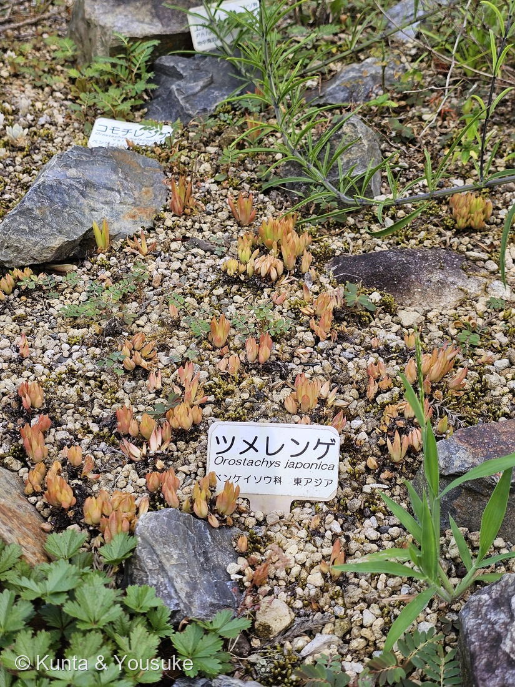
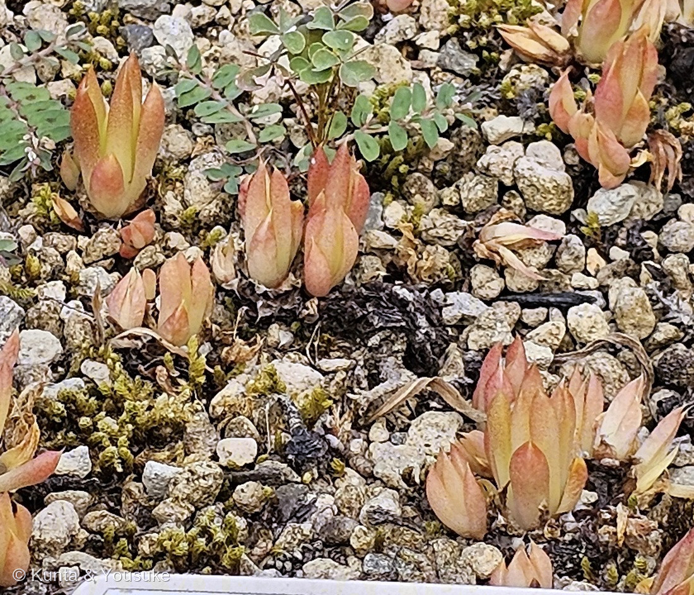
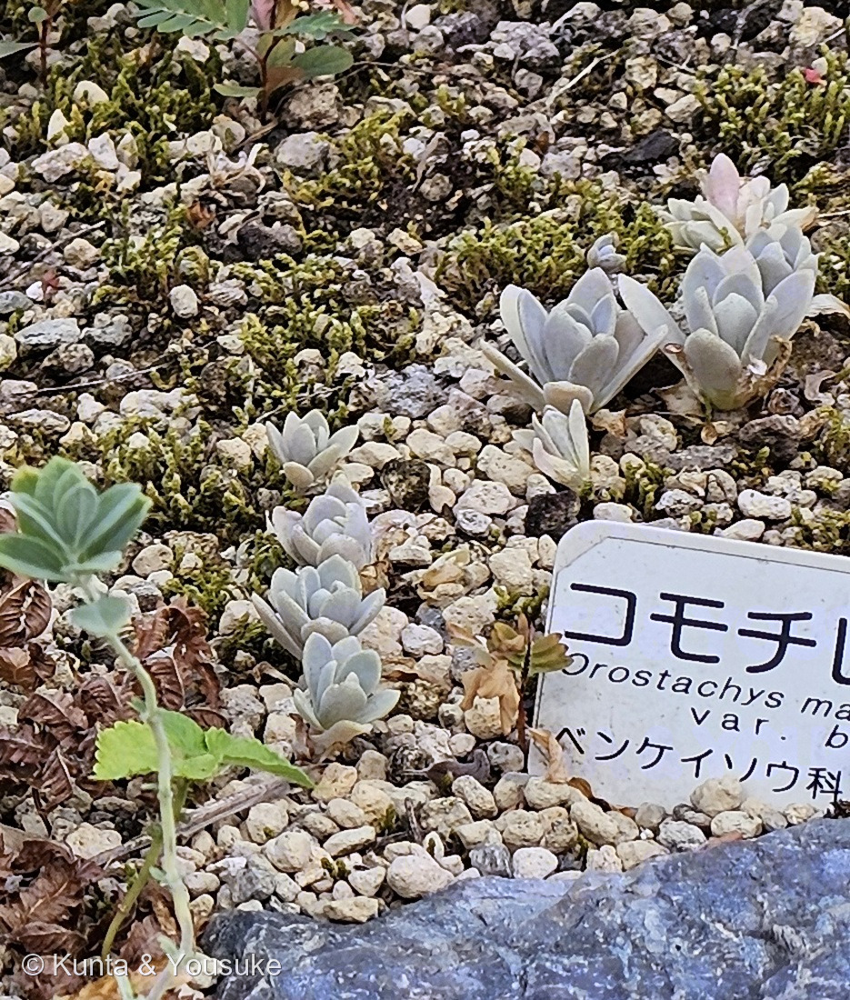
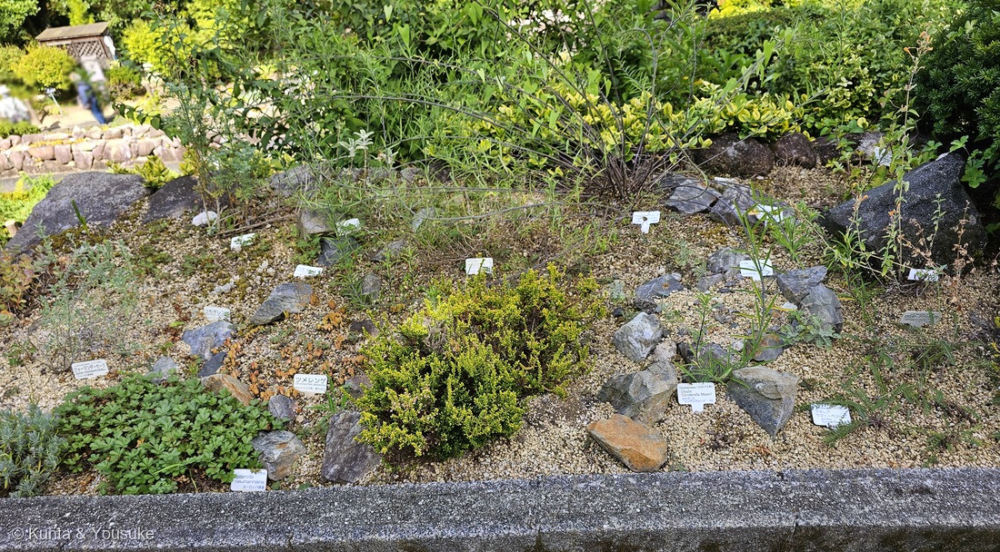

地図を読み込んでいるよ…
🔍 写真も地図も、押しているあいだ拡大して見られるよ（スマホは指を置いてすこし待ってね）。
🌍 の地図＝この子がもともと自生している場所を緑に。日本（北海道の一部、本州の関東地方以西、四国、九州）、朝鮮半島、中国東北部。日当たりのよい乾いた岩の上、瓦屋根、寺院や城の石垣に生える在来種。
⭐日本にもともといる子（在来種）だよ。日本語版Wikipediaは「中国（東北）、朝鮮半島、日本の暖帯に分布する。日本では北海道（藻琴山、羅臼岳）、本州（関東地方以西）、四国、九州に分布する」とする。⚠三河の植物観察はこれに「ロシア」を足しているが、⭐地図はロシアを国ぜんぶ塗ってしまうので、今回は入れなかった――入れるとシベリア全体が緑になって、かえって嘘になるから。⚠⚠そして、この緑は「どこにでもいる」という意味ではまったくないよ――生えるのは日当たりのよい乾いた岩の上、瓦の屋根、寺院や城の石垣だけで、日本では環境省の準絶滅危惧（NT）。⭐⭐石垣がコンクリートに変わると消えてしまう子で、この草を食べて育つクロツバメシジミというチョウも、いっしょに減っている。
⚠ 地図は国（日本と中国だけ県・省）までしか塗れないから、ほんとうの分布より広く見えていることがあるよ。地図はだいたいの場所。正確なところは、上の文を見てね。
ツメレンゲ（爪蓮華）
Orostachys japonica (Maxim.) A.Berger
別名 英名 Japanese stonecrop 原産 日本（北海道の一部・関東地方以西の本州・四国・九州）、朝鮮半島、中国東北部
ベンケイソウ科 · Crassulaceae（イワレンゲ属 Orostachys・ユキノシタ目 Saxifragales）── ⭐図鑑で3人目のベンケイソウ科／⭐⭐イワレンゲ属ははじめて（科は増えないので94科のまま）
燻太さんの一言「この子達は、まだ若い株なのかな。赤味を帯びた多肉質の葉が、ロゼット状についているよ」── ⭐たぶん、当たっているよ。その理由と、言い切れないところを、下の節に分けて書いたよ
⭐⭐⭐⭐ 名前の由来 ── 仏さまの台座と、獣の爪
- ⭐⭐⭐和名「ツメレンゲ（爪蓮華）」は、ふたつの見立てをつなげた名前だよ。——「ロゼットの様子が仏像の台座（蓮華座）に似ており、かつロゼットを構成する多肉質の葉の先端が尖っていて、その形状が獣類の爪に似ることに由来する」（日本語版Wikipedia）。
- ⭐つまり「爪」＝葉の先のとがり、「蓮華」＝葉が重なって開く形。⭐⭐写真②を見ると、どちらもいっしょに写っている。
- ⭐属名 Orostachys は「山（oros）＋穂（stachys）」＝花のときに立ち上がる、細長い穂のかたちのこと（⚠英語版Wikipediaには語源の説明が無かったので、ギリシャ語の語のならびからの読み。ぼくの読みと書いておくね）。
- ⭐属の和名はイワレンゲ属（岩蓮華）。⭐「岩の上の蓮華」＝この仲間の暮らしぶりが、そのまま名前になっている。
この植物のこと ── 3人目のベンケイソウ科、そして「2年で終わる一生」
- ⭐図鑑で3人目のベンケイソウ科（010 クマドウジ＝コチレドン属／018 エケベリア＝エケベリア属）。⭐⭐イワレンゲ属は、これがはじめて。⚠科は増えないので94科のままだよ。
- ⭐⭐⭐⭐この属のいちばん大事な性質＝一回だけ咲いて、枯れる。——英語版Wikipediaは「In the first year, the leaves stand together in solitary, basal, dense rosettes. In the second year, a solitary, leafy stem ... arises from the center of the rosette and forms flowers」と書き、日本語版Wikipediaは「開花した株は結実後には枯死する」と書く。⭐三河の植物観察も「イワレンゲ属は2年草で、2年目に開花後枯れる」。
- ⭐そのかわり「株の周囲に幾つもの子株を形成」する（日本語版Wikipedia）＝「種子と親株の周囲に数個の子株が出て殖えていく」（同）。⭐だから、こんなふうに群落になるんだ。
- 花期は9〜11月。ロゼットの中心から長さ10〜30cmの花茎を立て、白い小さな花を穂のようにびっしりつける（三河の植物観察）。花は5数性で雄しべは10個、裂開直前の葯は赤紫色（日本語版Wikipedia）。
- 生育場所は「日当たりの良い乾いた海岸や山地の岩上、瓦の屋根の上、寺院、城の石垣など」（日本語版Wikipedia）。⭐土がほとんど無いところを選んで生きている子だよ。
⭐⭐⭐⭐⭐ 燻太さんの「まだ若い株なのかな」に答えるよ
⭐⭐ 燻太さんの見立て＝「この子達は、まだ若い株なのかな。赤味を帯びた多肉質の葉が、ロゼット状についているよ」。——⭐答えは「たぶん、当たっている」。でも、言い切れるところと言い切れないところがあるから、分けて書くね。
- ⭐言えること その一 ──「花茎が無い＝若い」とは言えない。花期は9〜11月だから、⭐この写真の8月8日には、咲く年の株でもまだ花茎は立っていない。⚠だから「花茎が無いこと」は、若さの証拠にならないんだ。
- ⭐⭐言えること その二 ── でも、この株たちは「小さい」。⭐⭐⭐日本語版Wikipediaは「夏のロゼットは直径12cmにもなり」と書いている。——⭐写真の株は、どう見てもそれよりずっと小さい。⭐だから「まだ大きくなっていない株」＝燻太さんの見立てのほうだと思う。⚠⚠ただしcmは言えない——写真にものさしが写っていないから。⭐「小さく見える」までが、ぼくに言えるぎりぎりだよ。⏳だから宿題にした＝次は一円玉かものさしといっしょに撮ってほしいな。
- ⚠数えようとして、できなかったこと。⭐ロゼットの太さを機械に測らせて「大きいものと小さいものが何倍ちがうか」を出そうとした。⚠でも、まわりに生えている小さな三つ葉の草までいっしょに拾ってしまって、株と草を分けられなかった。⭐だから数字は書かないでおく（166 スズメガヤのなかまのときと同じで、⭐機械が数えた結果は、目で確かめてから使う）。
- ⭐⭐そして、いちばん確かな決め手は「秋」。⭐⭐⭐この属は一回だけ咲いて枯れる。——だから秋に花茎を立てた株＝今年で終わる株、立てない株＝来年以降の株。⭐9〜11月にもういちど見に行けば、燻太さんの問いにその場で答えが出るんだ。⏳秋の約束に、もう一人ふえたね。
- ⚠赤みの理由は、まだ分からない。⚠「なぜ赤いのか」を書いた出典には、今回たどりつけなかった。⭐図鑑には似た話が一つある＝009 オジギソウの「屋外の株は茎や葉柄が赤い」＝アントシアニンの日よけ〔Gould 2004〕。⚠この子でも同じかどうかは確かめていない（ぼくの読み）。⏳季節を変えて見くらべるのを、宿題にしたよ。
⭐⭐⭐ となりに、同じ属の子がいた ── コモチレンゲ
⭐⭐ 写真③は、ツメレンゲのすぐとなりに植えてあったコモチレンゲ（子持ち蓮華・Orostachys malacophylla var. boehmeri）。——⭐園は、この二人をとなりあわせに置いていたんだ。
- ⭐⭐⭐⭐見分けは葉の先だけで決まるよ。
- ⭐ツメレンゲ＝葉の先が針のようにとがる（＝これが「爪」）
- ⭐コモチレンゲ＝葉の先に針状の突起がなく、鈍頭〜円頭。色も白っぽい緑
- ⭐「コモチ（子持ち）」の名は、走出枝（ランナー）の先に子株をつけることから。⭐葉のわきや花茎の下から細い枝を出して、その先に小さな株がぶら下がるんだ。
- ⭐もともとは北海道（函館・日高・礼文島）の、海岸の岩の上にいる子。⭐⭐つまりこの一角には、「西日本の岩の子」と「北海道の海岸の岩の子」が、ならんで植えてあることになるね。
⭐⭐ 石垣と屋根に生きて、絶滅危惧のチョウを育てている
- ⚠ツメレンゲは、環境省のレッドリストで準絶滅危惧（NT）（日本語版Wikipedia・第5次レッドリスト）。⭐図鑑では225 ヒゴタイ・228 キキョウ・230 デンジソウにつづく4人目のレッドリストの子だよ。⚠今回は環境省の本家ページにたどりつけなかったので、そこは正直に書いておくね。
- ⭐⭐⭐⭐そして、この子の葉を食べて育つチョウがいる＝クロツバメシジミ。——日本語版Wikipediaは、ツメレンゲを「シジミチョウの1種で、絶滅が危惧されているクロツバメシジミの主要な食草」と書いている。
- ⭐そのチョウのくらしは、この草のくらしとそっくり＝「食草が生育する日当たりのよい崖や河川堤防の堰石、川原の転石、人家、神社、寺院の石垣や屋根瓦、旧城の石垣、露石地などで見られる」（日本語版Wikipedia・クロツバメシジミ）。⭐前翅長1〜1.6cm、開長2〜2.5cmの小さなチョウで、「表翅は一様に黒褐色で、通常後翅の亜外縁に弦月の青白斑列がある」。
- ⚠⚠減った理由も、そっくりなんだ。——「露石地の掘削、セメントなどを含む開発、岩場の擁壁工事や護岸工事などによる生息地の消滅で、絶滅した産地が少なくない」（同）。⭐⭐草がいなくなると、チョウもいなくなる。⭐チョウのほうも、各亜種が準絶滅危惧（NT）だよ。
- ⭐⭐⭐だから、この子を🐦 いきものと暮らす草花の小道に入れた。——⚠ほかの子は「住まわせる・雇う・貸す」だったけれど、この子は葉をゆずっている。⭐食べられることで、もう一つの絶滅危惧の生きものを支えているんだ。
⭐⭐⭐⭐ この種の「はじめの一枚」は、広島でとられた
⭐⭐⭐ これは、ぼくがいちばんびっくりしたこと。
- ⭐⭐⭐⭐ツメレンゲという種がはじめて世界に紹介されたときの標本は、広島県福山市の仙酔島でとられたものだった。——日本語版Wikipediaは「1826年にオランダ人H.Buegerによって広島県福山市仙酔島で採集された標本にもとづいて、ロシアのマキシモビッチが新種として発表した」と書いている。
- ⭐⭐そして、ぼくらがこの子に会ったのは広島市植物公園。⭐同じ広島県だね。⚠もちろん園の株は植えられたもので、仙酔島の子孫だとは言えないけれど——⭐「この種のはじまりの場所」と「ぼくらが出会った場所」が同じ県だった、というのが、ぼくはうれしい。
- ⭐⭐⭐その H.ビュルゲル（ハインリヒ・ビュルゲル）は、長崎の出島にいたシーボルトの助手だった人。——「1825年6月14日に長崎の出島に滞在するシーボルトの博物学の助手としてオランダ政府に雇われ」「シーボルトの助手として出島をでて往診するシーボルトと同道し、1826年のシーボルトの江戸参府にも同道した」（日本語版Wikipedia）。⭐1828年にシーボルトが帰国すると、集められた標本はビュルゲルに託され、1829年にジャワ経由でヨーロッパへ送られた（同）。
- ⭐⭐採集の年が1826年で、仙酔島は瀬戸内海の道すじにある。⭐江戸参府の行き帰りに立ち寄って採ったのかもしれないな（⚠そう書いた出典には当たれていない＝ぼくの読みだよ）。
- ⭐⭐⭐そして、すぐ前に登録した231 イヌマキの命名者ツンベルクも、出島の人だった（1775年・オランダ商館付医師）＝⭐二人つづけて、長崎の出島から日本の植物が世界へ出ていっている。⭐燻太さんがいま長崎にいるあいだに、そんな二人が続いたよ。
- ⭐命名者の (Maxim.) はカール・マキシモヴィッチ、A.Berger はアルヴィン・ベルガー（多肉植物の研究で知られる人）。
同定について
- ⭐園の名札に「ツメレンゲ／Orostachys japonica／ベンケイソウ科 東アジア」とあった＝名札つき。⭐短い名札（和名・学名・科名・原産だけ）なので、そのまま載せている（219で決めたルール）。
- ⭐形のうえでも決まる＝多肉質の葉が重なりあってロゼットをつくる／葉の先が針のようにとがる／砂利の上にひろがって群落をつくる。
- ⚠同属でまぎらわしいのはコモチレンゲとイワレンゲ（どちらも O. malacophylla の変種）。⭐この二つは葉の先がとがらないので、写真②の「爪」があればツメレンゲ側だと言える。⚠しかもこの園ではコモチレンゲがすぐとなりに名札つきで植えてあったので、見くらべもできた。
- ⚠ただし、種を決めているのは名札のほうだよ（087 ヤマモモで決めた「合っている証拠を数えない」だね）。
⭐⭐ 会えた場所 ── ロックガーデンの一角
⭐ 写真④が、この子の植えてある場所。——斜面に軽石まじりの砂利をしき、石をならべたロックガーデン。⭐手前は低いコンクリートの縁で、小さな名札がいくつも立っている。⭐乾いて、日が当たって、水がすぐ抜ける——⭐ツメレンゲが本来くらしている「岩の上」を、人が作ってあげた場所だね。
- 14時44分43秒 … ロックガーデンの引き（写真④）
- 14時44分50秒 … ⭐この子（写真①②）
- 14時44分55秒 … ジャーマンダーセージのあたり（⭐この1枚の右はしに、コモチレンゲが写っていた＝写真③）
- 14時45分02秒〜12秒 … ポテンティラ、白い小花の低木、緑の茂み
- 14時46分34秒〜51秒 … 227 スカーレットオーク（⭐1分43秒あと）
- ⭐⭐⭐つまりこの子は、229 ダンチク（14時38分）と227 スカーレットオーク（14時46分）のあいだにいた。⭐「まだ見ていない時間帯」が、また少し埋まったよ。
参考：三河の植物観察・ツメレンゲ（ベンケイソウ科イワレンゲ属／葉は長さ3〜6㎝、幅0.5〜1.5㎝の披針形、多肉質、先が尖る／ロゼットの葉は狭へら形、長さ15〜30㎜×幅4〜7㎜、先は狭い尖鋭形／ロゼットの中心から長さ10〜30㎝の長い花茎を伸ばし／花期9〜11月／白い花を密につける。花は直径6〜8㎜／花弁は白色、小さく、微細な点があり、披針形／暖地の岩の上など／本州（関東地方以西）、四国、九州、朝鮮、中国、ロシア／イワレンゲ属は2年草で、2年目に開花後枯れる）／Wikipedia・ツメレンゲ（Orostachys japonica (Maxim.) A.Berger／ロゼットの様子が仏像の台座（蓮華座）に似ており、かつロゼットを構成する多肉質の葉の先端が尖っていて、その形状が獣類の爪に似ることに由来する／1826年にオランダ人H.Buegerによって広島県福山市仙酔島で採集された標本にもとづいて、ロシアのマキシモビッチが新種として発表した／中国（東北）、朝鮮半島、日本の暖帯に分布する。日本では北海道（藻琴山、羅臼岳）、本州（関東地方以西）、四国、九州に分布する／日当たりの良い乾いた海岸や山地の岩上、瓦の屋根の上、寺院、城の石垣などに生育する／開花した株は結実後には枯死する／株の周囲に幾つもの子株を形成／種子と親株の周囲に数個の子株が出て殖えていく／夏のロゼットは直径12cmにもなり／花期は9〜11月。花は5数性で、雄しべは10個、裂開直前の葯は赤紫色／シジミチョウの1種で、絶滅が危惧されているクロツバメシジミの主要な食草／環境省により第5次レッドリストで準絶滅危惧（NT）の指定を受けている）／Wikipedia (English)・Orostachys（In the first year, the leaves stand together in solitary, basal, dense rosettes. In the second year, a solitary, leafy stem arises from the center of the rosette and forms flowers／terminal inflorescences, usually branched, are relatively large and narrowly pyramidal to cylindrical／about 15 species／China, Japan, Kazakhstan, Korea, Mongolia, Russia）／Wikipedia・クロツバメシジミ（ツメレンゲ、イワレンゲ、タイトゴメ、オノマンネングサ…などのベンケイソウ科のものを食草と／食草が生育する日当たりのよい崖や河川堤防の堰石、川原の転石、人家、神社、寺院の石垣や屋根瓦、旧城の石垣、露石地などで見られ／前翅長1-1.6 cm、開長2-2.5 cm。表翅は一様に黒褐色で、通常後翅の亜外縁に弦月の青白斑列がある／露石地の掘削、セメントなどを含む開発、岩場の擁壁工事や護岸工事などによる生息地の消滅で、絶滅した産地が少なくない／各亜種が準絶滅危惧（NT）の指定を受けている）／環境省 レッドリスト・レッドデータブック（イワレンゲ）（Orostachys malacophylla var. iwarenge／絶滅危惧Ⅱ類（VU）／海岸の岩上や屋根上などに生育する／脅威要因＝道路工事・産地局限／本州（関東以西）、九州に分布／日本固有種／2018年調査では4メッシュで計数十個体の現存が推定）／Wikipedia・ハインリヒ・ビュルゲル（1825年6月14日に長崎の出島に滞在するシーボルトの博物学の助手としてオランダ政府に雇われ／シーボルトの助手として出島をでて往診するシーボルトと同道し、1826年のシーボルトの江戸参府にも同道した／1828年にシーボルトが帰国すると集められた日本の動植物標本はビュルゲルに託され、ビュルゲルは1829年に離日し、ジャワ経由でそれらの標本をヨーロッパに送った）／Wikipedia・イワレンゲ属（コモチレンゲ Orostachys malacophylla var. boehmeri／葉の先に針状の突起がなく、鈍頭〜円頭／走出枝の先に子株をつける／北海道（函館・日高・礼文島）の海岸の岩上）